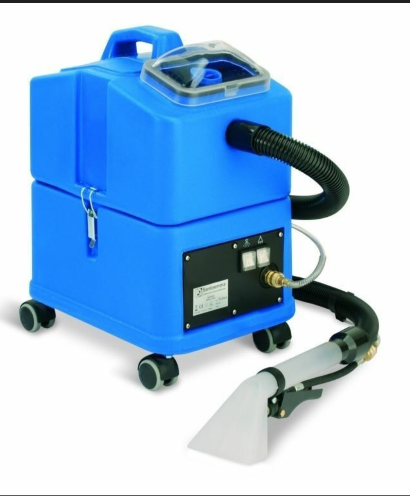

ХІМЧИСТКА СИДІНЬ
Глибоке очищення сидінь
Видаляємо пил, плями, забруднення та неприємні запахи. Метод очищення підбираємо відповідно до матеріалу.
- тканинні сидіння;
- шкіряні сидіння;
- екошкіра;
- комбіновані матеріали.
ROYAL AUTO ATELIER
Проводимо глибоке очищення салону автомобіля: сидінь, підлоги, стелі, дверних карт, пластику та багажного відділення.

ЩО МИ ОЧИЩУЄМО
Глибоке очищення тканинних, шкіряних і комбінованих сидінь.
Детальніше → 🧹Видалення пилу, бруду, плям і неприємних запахів.
Детальніше → ☁️Делікатне очищення тканини без пошкодження та провисання.
Детальніше → 🚪Очищення тканини, пластику, ручок і декоративних вставок.
Детальніше → 🚘Очищення підлоги, боковин, полиці та пластикових деталей.
Детальніше → ✨Комплексне очищення всіх поверхонь салону автомобіля.
Детальніше →ХІМЧИСТКА СИДІНЬ
Видаляємо пил, плями, забруднення та неприємні запахи. Метод очищення підбираємо відповідно до матеріалу.
ПІДЛОГА ТА КИЛИМКИ
Прибираємо пісок, пил, складні плями та забруднення з килимового покриття салону.
СТЕЛЯ ТА СТІЙКИ
Очищаємо тканину стелі та стійок обережними методами, щоб не пошкодити матеріал і клейову основу.
ДВЕРНІ КАРТИ
Очищаємо тканинні вставки, пластик, ручки, кнопки та декоративні елементи дверей.
БАГАЖНЕ ВІДДІЛЕННЯ
Очищаємо підлогу, боковини, пластикові елементи та полицю багажного відділення.
ПОВНА ХІМЧИСТКА
Повна хімчистка охоплює сидіння, підлогу, двері, стелю, багажник та всі пластикові поверхні.
НАШІ РОБОТИ
КОНСУЛЬТАЦІЯ
Надішліть фотографії салону та вкажіть автомобіль. Ми допоможемо визначити необхідний обсяг робіт.